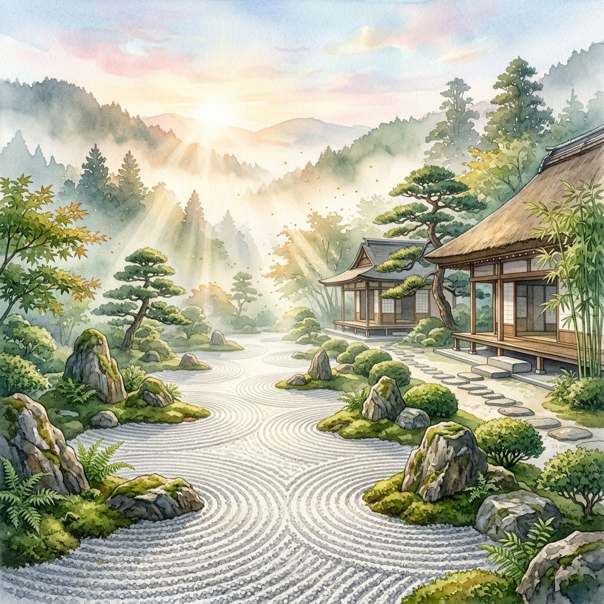
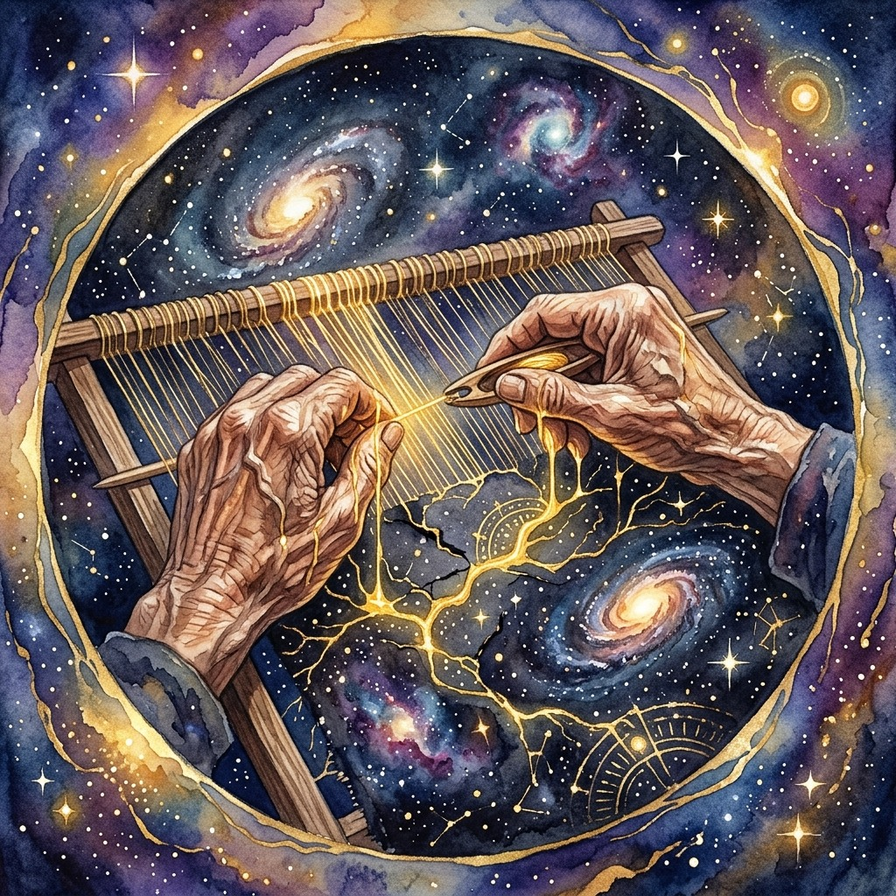
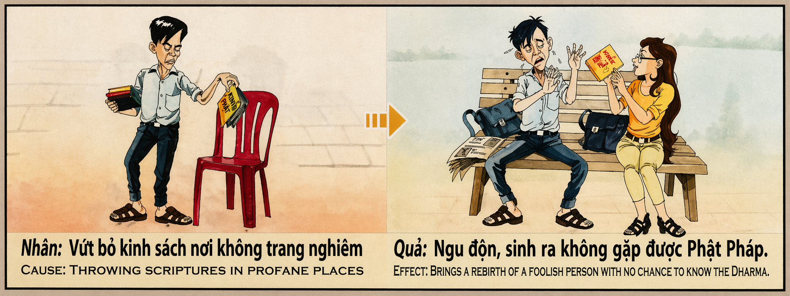

El Arte del Karma The Art of Karma L'arte del Karma 业力的艺术 فن الكارما Искусство Кармы Die Kunst des Karma L'Art du Karma カルマの芸術 A Arte do Karma Nghệ Thuật Của Nghiệp
"Quien cuida su propio karma con la delicadeza de un artista supremo, adorna su alma con hilos de oro y renace en la más pura armonía celestial." "Whoever tends to their own karma with the delicacy of a supreme artist, adorns their soul with golden threads and is reborn in the purest celestial harmony." "Colui che cura il proprio karma con la delicatezza di un artista supremo, adorna la propria anima con fili d'oro e rinasce nella più pura armonia celeste." “以至高艺术家的细腻处理自己的业力的人，用金线装饰自己的灵魂，并在最纯粹的天界和谐中重生。” "من يعتني بالكارما الخاصة به برقة فنان عظيم، يزين روحه بخيوط من الذهب ويولد من جديد في أنقى تناغم سماوي." «Тот, кто заботится о своей карме с деликатностью высшего художника, украшает свою душу золотыми нитями и перерождается в чистейшей небесной гармонии.». „Wer sein eigenes Karma mit der Zartheit eines herausragenden Künstlers pflegt, schmückt seine Seele mit goldenen Fäden und wird in reinster himmlischer Harmonie wiedergeboren.“ « Celui qui prend soin de son propre karma avec la délicatesse d'un artiste suprême, orne son âme de fils d'or et renaît dans la plus pure harmonie céleste. » 「至高の芸術家の繊細さで自らのカルマを処理する者は、自らの魂を金の糸で飾り、最も純粋な天上の調和の中で生まれ変わる。」 "Aquele que cuida do próprio carma com a delicadeza de um artista supremo, enfeita sua alma com fios de ouro e renasce na mais pura harmonia celestial." "Người chăm sóc nghiệp chướng của chính mình với sự tinh tế của một nghệ sĩ tối cao, tô điểm tâm hồn mình bằng những sợi chỉ vàng và được tái sinh trong sự hòa hợp thuần khiết nhất của thiên đường."
En el gran templo del universo, el karma no es simplemente una ley de compensaciones mecánicas, sino una disciplina de belleza suprema, un arte que debe ser cultivado con devoción y delicadeza. Cada pensamiento que emitimos, cada palabra que pronunciamos y cada acción que realizamos es una pincelada sobre el lienzo invisible de nuestro propio destino. Quien trata su conducta cotidiana con esmero, amor y compasión, puliendo hasta el más mínimo detalle de sus interacciones con los demás, está practicando la más alta alquimia kármica: la transformación del ser en una obra de arte viviente.
¿Por qué el esmero en las pequeñas acciones tiene un efecto tan transformador? Porque la verdadera pureza moral no reside en los actos heroicos y visibles, sino en la sensibilidad silenciosa de los momentos cotidianos. Saludar con un respeto genuino, escuchar con atención sincera, consolar sin que nadie nos vea o reparar el daño ajeno con paciencia son los hilos de oro con los que se teje el alma. El universo no juzga la magnitud exterior del acto, sino la finura interior del corazón que lo produce. Quien adorna su vida de bondad silenciosa, está tejiendo un manto protector de pura luz a su alrededor.
El fruto de cuidar el karma como un arte es de una belleza inconmensurable: el alma no solo se libera de las asperezas y deudas acumuladas, sino que se sintoniza con las frecuencias más elevadas de la creación. Al desencarnar, aquel que esculpió su karma con amor y esmero merece renacer en existencias de sublime armonía, rodeado de belleza, gracia espiritual y una paz que excede todo entendimiento. Porque el arte de la tierra se convierte en el palacio del cielo; quien creó belleza en lo pequeño, habitará en la gloria eterna de lo perfecto.
In the grand temple of the universe, karma is not simply a mechanical law of compensation, but a discipline of supreme beauty, a sacred art that must be cultivated with deep devotion and care. Every thought we release, every word we utter, and every action we perform is a brushstroke upon the invisible canvas of our destiny. Whoever treats their daily conduct with reverence and compassion, polishing the smallest details of their interactions with others, is practicing the highest karmic alchemy: the transformation of the self into a living masterpiece.
Why does meticulous care in small actions have such a transformative effect? Because true moral purity does not reside in loud, heroic deeds, but in the silent sensitivity of daily moments. Greeting someone with genuine respect, listening with sincere attention, offering comfort when no one is watching, or repairing another's hurt with patience —these are the golden threads with which the soul is woven. The universe does not judge the outer magnitude of the deed, but the inner refinement of the heart from which it flows. He who adorns his life with silent kindness weaves a protective mantle of pure light around his destiny.
The fruit of tending to karma as a fine art is of an immeasurable beauty: the soul is not only liberated from its accumulated debts and rough edges, but it attunes to the highest frequencies of creation. Upon departure, the one who sculpted their karma with love and devotion is worthy of being reborn in an existence of sublime harmony, surrounded by elegance, spiritual grace, and a peace that surpasses all understanding. For the art of the earth becomes the palace of heaven; he who created beauty in small things shall dwell in the eternal glory of the perfect.
Nel grande tempio dell'universo, il karma non è semplicemente una legge di compensazioni meccaniche, ma una disciplina di suprema bellezza, un'arte che va coltivata con devozione e delicatezza. Ogni pensiero che pronunciamo, ogni parola che pronunciamo e ogni azione che compiamo è una pennellata sulla tela invisibile del nostro destino. Coloro che trattano il loro comportamento quotidiano con cura, amore e compassione, lucidando anche il più piccolo dettaglio delle loro interazioni con gli altri, praticano la più alta alchimia karmica: la trasformazione dell'essere in un'opera d'arte vivente.
Perché la dedizione alle piccole azioni ha un effetto così trasformativo? Perché la vera purezza morale non risiede negli atti eroici e visibili, ma nella silenziosa sensibilità dei momenti quotidiani. Salutare con genuino rispetto, ascoltare con sincera attenzione, confortare senza che nessuno ci veda o riparare i danni altrui con pazienza sono i fili d'oro di cui è intessuta l'anima. L'universo non giudica la grandezza esterna dell'atto, ma piuttosto la finezza interna del cuore che lo produce. Colui che adorna la propria vita di silenziosa bontà tesse attorno a sé un manto protettivo di pura luce.
Il frutto della cura del karma come arte è di incommensurabile bellezza: l'anima non solo è liberata dalla durezza e dal debito accumulati, ma è in sintonia con le frequenze più alte della creazione. Dopo la disincarnazione, colui che ha scolpito il suo karma con amore e cura merita di rinascere in esistenze di sublime armonia, circondato da bellezza, grazia spirituale e una pace che supera ogni comprensione. Perché l'arte della terra diventa reggia del cielo; Colui che ha creato la bellezza nel piccolo abiterà nella gloria eterna dei perfetti.
在宇宙的伟大殿堂中，业力不仅仅是一种机械补偿的法则，而是一门至高无上的美的学科，一门必须虔诚和细致地培养的艺术。我们所说的每一个想法，我们所说的每一句话，我们采取的每一个行动，都是我们自己命运的无形画布上的一笔。那些以关怀、爱和同情心对待自己日常行为，甚至打磨与他人互动的最微小细节的人，正在实践最高的业力炼金术：将存在转变为一件活生生的艺术品。
为什么奉献于小行动会产生如此变革性的效果？因为真正的道德纯洁性不在于英雄和可见的行为，而在于日常生活时刻的沉默敏感。以真诚的尊重打招呼，以真诚的关注倾听，在没有人看到我们的情况下安慰我们，或耐心地修复他人的伤害，这些都是编织灵魂的金线。宇宙不会评判行为的外在大小，而是评判产生该行为的内心的内在品质。用沉默的善良装饰自己生活的人，正在为他周围编织一层纯净的光的保护斗篷。
作为一门艺术来照顾业力的成果具有不可估量的美丽：灵魂不仅摆脱了累积的严酷和债务，而且与创造的最高频率相协调。脱离躯体后，用爱和关怀塑造自己业力的人应该在崇高和谐的存在中重生，被美丽、精神恩典和超越所有理解的平静所包围。因地艺成天宫；创造微小之美的人将居住在完美的永恒荣耀中。
في المعبد العظيم للكون، ليست الكارما مجرد قانون للتعويضات الميكانيكية، بل هي نظام للجمال الأسمى، وهو فن يجب تنميته بإخلاص ودقة. كل فكرة ننطق بها، وكل كلمة نقولها، وكل فعل نتخذه، هي بمثابة ضربة فرشاة على اللوحة غير المرئية لمصيرنا. أولئك الذين يتعاملون مع سلوكهم اليومي بعناية وحب ورحمة، ويصقلون حتى أصغر تفاصيل تفاعلاتهم مع الآخرين، يمارسون أعلى كيمياء كارمية: تحويل الكائن إلى عمل فني حي.
لماذا يكون للتفاني في الأعمال الصغيرة مثل هذا التأثير التحويلي؟ لأن النقاء الأخلاقي الحقيقي لا يكمن في الأعمال البطولية والمرئية، بل في الحساسية الصامتة للحظات الحياة اليومية. التحية باحترام حقيقي، والاستماع باهتمام صادق، والتعزية دون أن يرانا أحد، أو إصلاح ضرر الآخرين بالصبر، هي الخيوط الذهبية التي تنسج بها الروح. إن الكون لا يحكم على الحجم الخارجي للفعل، بل على دقة القلب الداخلية التي تنتجه. من يزين حياته بالخير الصامت فهو ينسج حوله عباءة واقية من النور النقي.
إن ثمرة الاهتمام بالكارما كفن هي ذات جمال لا يقاس: فالروح لا تتحرر من القسوة والديون المتراكمة فحسب، بل تتناغم مع أعلى ترددات الخلق. عند التحرر من الجسد، يستحق الشخص الذي نحت الكارما الخاصة به بالحب والرعاية أن يولد من جديد في وجود يسوده الانسجام الرفيع، محاطًا بالجمال والنعمة الروحية والسلام الذي يفوق كل فهم. لأن فن الأرض يصبح قصر السماء؛ إن الذي خلق الجمال في الصغير سوف يسكن في المجد الأبدي للكمال.
В великом храме вселенной карма — это не просто закон механической компенсации, но дисциплина высочайшей красоты, искусство, которое необходимо развивать с преданностью и деликатностью. Каждая мысль, которую мы произносим, каждое слово, которое мы говорим, и каждое действие, которое мы предпринимаем, — это мазок на невидимом холсте нашей собственной судьбы. Те, кто относятся к своему повседневному поведению с заботой, любовью и состраданием, оттачивая даже мельчайшие детали своего взаимодействия с другими, практикуют высшую кармическую алхимию: превращение существа в живое произведение искусства.
Почему преданность малым действиям имеет такой преобразующий эффект? Потому что истинная моральная чистота заключается не в героических и видимых поступках, а в молчаливой чуткости повседневных моментов. Приветствовать с искренним уважением, слушать с искренним вниманием, утешать так, чтобы никто нас не видел, и терпеливо возмещать ущерб другим — вот золотые нити, из которых соткана душа. Вселенная судит не внешнюю величину поступка, а внутреннюю тонкость сердца, его совершающего. Тот, кто украшает свою жизнь молчаливой добротой, плетет вокруг себя защитную мантию чистого света.
Плод заботы о карме как искусстве неизмеримой красоты: душа не только освобождается от накопившейся суровости и долгов, но и настраивается на высшие частоты творения. После развоплощения тот, кто с любовью и заботой лепил свою карму, заслуживает перерождения в существовании возвышенной гармонии, окруженном красотой, духовной благодатью и миром, превосходящим всякое понимание. Потому что искусство земли становится дворцом небесным; Тот, кто создал красоту в малом, будет обитать в вечной славе совершенства.
Im großen Tempel des Universums ist Karma nicht einfach ein Gesetz mechanischer Kompensationen, sondern eine Disziplin von höchster Schönheit, eine Kunst, die mit Hingabe und Feingefühl gepflegt werden muss. Jeder Gedanke, den wir äußern, jedes Wort, das wir sagen, und jede Handlung, die wir unternehmen, ist ein Pinselstrich auf der unsichtbaren Leinwand unseres eigenen Schicksals. Wer sein tägliches Verhalten mit Sorgfalt, Liebe und Mitgefühl behandelt und selbst das kleinste Detail seiner Interaktionen mit anderen verfeinert, praktiziert die höchste karmische Alchemie: die Umwandlung des Wesens in ein lebendiges Kunstwerk.
Warum hat die Hingabe an kleine Taten eine so transformative Wirkung? Denn wahre moralische Reinheit liegt nicht in heroischen und sichtbaren Taten, sondern in der stillen Sensibilität alltäglicher Momente. Mit echtem Respekt begrüßen, mit aufrichtiger Aufmerksamkeit zuhören, trösten, ohne dass uns jemand sieht, oder mit Geduld den Schaden anderer reparieren, sind die goldenen Fäden, mit denen die Seele verwoben ist. Das Universum beurteilt nicht die äußere Größe der Tat, sondern vielmehr die innere Feinheit des Herzens, das sie hervorbringt. Wer sein Leben mit stiller Güte schmückt, webt einen schützenden Mantel aus reinem Licht um sich.
Die Frucht der Karmapflege als Kunst ist von unermesslicher Schönheit: Die Seele wird nicht nur von angesammelter Härte und Schulden befreit, sondern auch auf die höchsten Frequenzen der Schöpfung eingestimmt. Nach dem Austritt aus dem Körper verdient derjenige, der sein Karma mit Liebe und Sorgfalt geformt hat, die Wiedergeburt in einer Existenz erhabener Harmonie, umgeben von Schönheit, spiritueller Anmut und einem Frieden, der jedes Verständnis übersteigt. Weil die Kunst der Erde zum Palast des Himmels wird; Er, der Schönheit im Kleinen geschaffen hat, wird in der ewigen Herrlichkeit des Vollkommenen wohnen.
Dans le grand temple de l'univers, le karma n'est pas simplement une loi de compensations mécaniques, mais une discipline d'une beauté suprême, un art qui doit être cultivé avec dévotion et délicatesse. Chaque pensée que nous exprimons, chaque mot que nous prononçons et chaque action que nous entreprenons est un coup de pinceau sur la toile invisible de notre propre destin. Ceux qui traitent leur comportement quotidien avec soin, amour et compassion, peaufinant même les moindres détails de leurs interactions avec les autres, pratiquent la plus haute alchimie karmique : la transformation de l’être en une œuvre d’art vivante.
Pourquoi le dévouement à de petites actions a-t-il un tel effet transformateur ? Car la véritable pureté morale ne réside pas dans les actes héroïques et visibles, mais dans la sensibilité silencieuse des instants quotidiens. Saluer avec un véritable respect, écouter avec une attention sincère, réconforter sans que personne ne nous voie ou réparer les dégâts d'autrui avec patience sont les fils d'or avec lesquels l'âme est tissée. L'univers ne juge pas la grandeur extérieure de l'acte, mais plutôt la finesse intérieure du cœur qui le produit. Celui qui orne sa vie d’une bonté silencieuse tisse autour de lui un manteau protecteur de pure lumière.
Le fruit du soin du karma en tant qu’art est d’une beauté incommensurable : l’âme est non seulement libérée de la dureté et des dettes accumulées, mais elle est également en harmonie avec les plus hautes fréquences de la création. Lors de la désincarnation, celui qui a sculpté son karma avec amour et soin mérite de renaître dans des existences d'harmonie sublime, entouré de beauté, de grâce spirituelle et d'une paix qui dépasse toute compréhension. Parce que l’art de la terre devient le palais du ciel ; Celui qui a créé la beauté dans le petit habitera dans la gloire éternelle du parfait.
宇宙の偉大な神殿において、カルマは単なる機械的な代償の法則ではなく、至高の美の規律であり、献身と繊細さをもって培われなければならない芸術です。私たちが発するすべての考え、私たちが話すすべての言葉、そして私たちがとるすべての行動は、私たち自身の運命という目に見えないキャンバス上の一筆書きです。日々の行動を注意、愛情、思いやりを持って扱い、他者との関わりの細部にまで磨きをかける人は、最高のカルマの錬金術、つまり存在を生きた芸術作品に変えることを実践していることになります。
小さな行動への献身がこれほど変革的な効果をもたらすのはなぜでしょうか?なぜなら、真の道徳的純粋さは英雄的で目に見える行為ではなく、日常の瞬間の静かな感受性の中に存在するからです。心から敬意を持って挨拶し、心からの注意を払って耳を傾け、誰にも見られずに慰め、忍耐強く他人のダメージを修復することは、魂が織り込まれている黄金の糸です。宇宙は行為の外面的な大きさではなく、それを生み出す心の内面の細かさを判断します。静かな善良さで自分の人生を飾る人は、純粋な光の保護マントを彼の周りに織り込んでいます。
芸術としてカルマを大切にする成果は計り知れない美しさです。魂は蓄積された厳しさと負債から解放されるだけでなく、創造の最高の周波数に同調します。愛と配慮を持ってカルマを刻んだ者は、肉体を離れた後、美しさ、精神的な恵み、そしてあらゆる理解を超えた平和に囲まれた、崇高な調和の存在に生まれ変わる権利がある。なぜなら、地上の芸術は天国の宮殿になるからです。小さなものに美を創造した者は、完璧な者の永遠の栄光の中に住むでしょう。
No grande templo do universo, o carma não é simplesmente uma lei de compensações mecânicas, mas uma disciplina de suprema beleza, uma arte que deve ser cultivada com devoção e delicadeza. Cada pensamento que pronunciamos, cada palavra que pronunciamos e cada ação que realizamos é uma pincelada na tela invisível do nosso próprio destino. Aqueles que tratam seu comportamento diário com cuidado, amor e compaixão, lapidando até os mínimos detalhes de suas interações com os outros, estão praticando a mais elevada alquimia cármica: a transformação do ser em uma obra de arte viva.
Por que a dedicação às pequenas ações tem um efeito tão transformador? Porque a verdadeira pureza moral não reside em atos heróicos e visíveis, mas na sensibilidade silenciosa dos momentos cotidianos. Cumprimentar com respeito genuíno, ouvir com atenção sincera, confortar sem que ninguém nos veja ou reparar os danos dos outros com paciência são os fios de ouro com que se tece a alma. O universo não julga a magnitude externa do ato, mas sim a sutileza interna do coração que o produz. Aquele que adorna a sua vida com uma bondade silenciosa está tecendo ao seu redor um manto protetor de pura luz.
O fruto de cuidar do carma como arte é de uma beleza imensurável: a alma não apenas se liberta da aspereza e da dívida acumulada, mas também se sintoniza com as frequências mais elevadas da criação. Ao desencarnar, aquele que esculpiu seu carma com amor e carinho merece renascer em existências de sublime harmonia, rodeado de beleza, graça espiritual e uma paz que ultrapassa todo entendimento. Porque a arte da terra se torna o palácio do céu; Aquele que criou a beleza no pequeno habitará na glória eterna do perfeito.
Trong ngôi đền vĩ đại của vũ trụ, nghiệp báo không chỉ đơn giản là một quy luật bù trừ máy móc mà còn là một kỷ luật có vẻ đẹp tối cao, một nghệ thuật phải được trau dồi với lòng sùng mộ và sự tinh tế. Mỗi suy nghĩ chúng ta thốt ra, mỗi lời chúng ta nói và mỗi hành động chúng ta thực hiện đều là nét vẽ trên bức tranh vô hình về số phận của chính chúng ta. Những người đối xử với hành vi hàng ngày của mình bằng sự quan tâm, tình yêu và lòng trắc ẩn, đánh bóng ngay cả những chi tiết nhỏ nhất trong tương tác của họ với người khác, đang thực hành thuật giả kim nghiệp cao nhất: biến sinh vật thành một tác phẩm nghệ thuật sống động.
Tại sao sự cống hiến cho những hành động nhỏ lại có tác dụng chuyển hóa như vậy? Bởi vì sự trong sạch đạo đức thực sự không nằm ở những hành động anh hùng và hữu hình, mà ở sự nhạy cảm thầm lặng của những khoảnh khắc đời thường. Chào hỏi với sự tôn trọng chân thành, lắng nghe với sự quan tâm chân thành, an ủi mà không ai nhìn thấy hay sửa chữa những tổn thương của người khác bằng sự kiên nhẫn là những sợi chỉ vàng mà tâm hồn được dệt nên. Vũ trụ không đánh giá tầm quan trọng bên ngoài của hành động mà là sự tinh tế bên trong của trái tim tạo ra hành động đó. Người tô điểm cuộc đời mình bằng lòng tốt thầm lặng đang dệt một tấm áo bảo vệ bằng ánh sáng thuần khiết xung quanh mình.
Thành quả của việc quan tâm đến nghiệp chướng như một nghệ thuật có vẻ đẹp vô cùng: tâm hồn không chỉ được giải thoát khỏi sự khắc nghiệt và nợ nần tích lũy mà còn được hòa hợp với tần số cao nhất của sáng tạo. Sau khi hóa thân, người đã tạo dựng nghiệp của mình bằng tình yêu và sự quan tâm xứng đáng được tái sinh trong những cuộc sống hài hòa tuyệt vời, được bao quanh bởi vẻ đẹp, ân sủng tâm linh và sự bình yên vượt quá mọi sự hiểu biết. Vì nghệ thuật của đất trở thành cung điện của trời; Người tạo ra vẻ đẹp từ những điều nhỏ bé sẽ sống trong vinh quang vĩnh cửu của sự hoàn hảo.
El Telar de Seda de Oro
The Loom of Golden Silk
Il telaio della seta d'oro
金丝织机
نول الحرير الذهبي
Золотой шелковый ткацкий станок
Der goldene Seidenwebstuhl
Le métier à tisser en soie dorée
黄金の絹織機
O tear de seda dourada
Máy dệt lụa vàng
En una pequeña aldea en las laderas de Annam, vivía un viejo tejedor llamado An. Tenía un ojo ciego y vestía prendas humildes, pero su telar producía milagros. An no trabajaba para los ricos ni para los nobles; su vida estaba consagrada a reparar las ropas raídas de los huérfanos, los mendigos y las viudas del pueblo. Sin embargo, An no se limitaba a remendar las prendas: sobre cada rotura, cada mancha o cada jirón, bordaba con paciencia hermosas flores silvestres utilizando finos hilos de seda de oro. Sus vecinos le preguntaban extrañados: 'An, ¿por qué gastas tu preciosa seda de oro en los harapos de los mendigos?'. El anciano sonreía con dulzura y respondía: 'Cada alma es un templo sagrado del cielo. Si reparo sus ropas con hilos feos y toscos, les recuerdo su miseria; pero si coso oro sobre su pobreza, les recuerdo que son preciosos para el universo. Cuidar de su dignidad es el arte de mi vida'.
El gobernador de la provincia, un hombre cruel y soberbio que había acumulado inmensas riquezas a costa del hambre del pueblo, oyó hablar de la fama del tejedor. Un día, llegó a la cabaña de An escoltado por sus guardias, trayendo consigo varios rollos de seda fina que habían sido confiscados por la fuerza a unos agricultores hambrientos. 'An', ordenó el gobernador con arrogancia, lanzando un pesado cofre de monedas de oro al suelo, 'quiero que tejas el tapiz más suntuoso para mi palacio usando esta seda confiscada. Si lo haces, este oro será tuyo y vivirás en la abundancia. Pero si te niegas, quemaré tu telar y te arrojaré a las bestias para que te devoren'.
El anciano tejedor miró fijamente la seda confiscada, luego el oro, y finalmente los ojos del tirano. Con una serenidad inquebrantable, juntó sus manos temblorosas y dijo: 'Gran señor, no es posible tejer una obra de arte con hilos que están empapados del llanto y el sufrimiento de los inocentes. La belleza del tejido se marchitaría y el humo del dolor envenenaría mi karma y el aire de tu palacio. Prefiero que quemes mi telar de madera antes que permitir que mis manos tejan un solo hilo de injusticia'. Enfurecido por la negativa, el gobernador ordenó prender fuego a la cabaña de An, destruyendo su telar y desterrando al anciano de la comarca en medio de una gélida tormenta.
An caminó sin rumbo bajo la lluvia helada, sin rencor ni amargura en su corazón. Tiritando de frío, se refugió bajo las raíces de un anciano baniano. Mientras sentía que sus fuerzas le abandonaban, el anciano no maldijo al tirano; en cambio, cerró los ojos y oró con profunda compasión, pidiendo que el gobernador encontrara la luz y liberara su propia alma de los hilos oscuros que estaba tejiendo. Al amanecer, cuando los aldeanos lo encontraron sin vida, presenciaron un prodigio: el cielo se había cubierto de miles de hilos de luz dorada que tejían un manto de protección sobre el valle, y una fragancia exquisita a jazmín inundaba el aire. El anciano An había completado su obra maestra: su propio karma, un tejido de infinita belleza y amor puro que ascendía radiante hacia los cielos.
In a small village nestled along the misty slopes of Annam, there lived an old weaver named An. He was blind in one eye and wore humble, threadbare robes, yet his loom produced miracles. An did not work for the wealthy or the nobles; his life was entirely consecrated to repairing the torn, dirty garments of orphans, beggars, and widows. Yet, An did not merely patch their clothes: over every tear, stain, or rip, he patiently embroidered beautiful wild flowers using fine threads of golden silk. His neighbors, mystified, would ask: 'An, why do you waste your precious golden silk on the rags of beggars?' The old man would smile gently and reply: 'Every soul is a sacred temple of the heavens. If I repair their garments with rough, ugly threads, I remind them of their misery; but if I sew gold onto their poverty, I remind them that they are precious to the universe. Protecting their dignity is the art of my life.'
The governor of the province, a cruel and arrogant man who had accumulated vast wealth by starving his people, heard of the weaver's fame. One day, he arrived at An’s cabin escorted by his guards, bringing rolls of fine silk that had been forcibly confiscated from starving farmers. 'An,' the governor ordered arrogantly, throwing a heavy chest of gold coins to the floor, 'I want you to weave the most sumptuous tapestry for my palace using this confiscated silk. If you do, this gold shall be yours and you will live in abundance. But if you refuse, I will burn your loom and throw you to the beasts to be devoured.'
The old weaver looked at the stolen silk, then at the gold, and finally into the eyes of the tyrant. With unshakable serenity, he folded his trembling hands and said: 'Noble lord, it is impossible to weave a work of art using threads soaked in the tears and suffering of the innocent. The beauty of the fabric would wither, and the smoke of their sorrow would poison my karma and the very air of your palace. I would rather you burn my wooden loom than allow my hands to weave a single thread of injustice.' Infuriated by his refusal, the governor ordered his guards to set fire to An’s cottage, destroying his loom and banishing the old man from the region into a freezing monsoonal storm.
An walked aimlessly through the icy rain, yet there was no resentment or bitterness in his heart. Shivering with cold, he sought shelter beneath the massive roots of an ancient banyan tree. As he felt his strength fading, the old man did not curse the tyrant; instead, he closed his eyes and prayed with deep compassion, asking that the governor find the light and free his own soul from the dark threads he was weaving. At dawn, when the villagers found his lifeless body, they witnessed a miracle: the sky was covered with thousands of golden threads, weaving a protective canopy of light over the valley, and an exquisite scent of jasmine filled the air. Old An had completed his final masterpiece: his own karma, a tapestry of infinite beauty and pure love that ascended radiantly into the heavens.
In un piccolo villaggio sulle pendici dell'Annam viveva un vecchio tessitore di nome An. Aveva un occhio cieco e indossava abiti umili, ma il suo telaio produceva miracoli. Ancora non lavorava per i ricchi o per i nobili; La sua vita fu dedicata a riparare gli abiti logori degli orfani, dei mendicanti e delle vedove del paese. An però non si limitava a rammendare gli indumenti: su ogni strappo, ogni macchia o ogni brandello, ricamava pazientemente bellissimi fiori selvatici utilizzando pregiati fili di seta dorata. I suoi vicini gli chiesero sorpresi: "Perché spendi la tua preziosa seta dorata sugli stracci dei mendicanti?" Il vecchio sorrise dolcemente e rispose: 'Ogni anima è un sacro tempio del cielo. Se riparo i loro vestiti con fili brutti e grossolani, ricordo loro la loro miseria; Ma se prego per la loro povertà, ricordo loro che sono preziosi per l'universo. Prendermi cura della tua dignità è l'arte della mia vita.'
Il governatore della provincia, un uomo crudele e arrogante che aveva accumulato immense ricchezze a scapito della fame del popolo, venne a conoscenza della fama del tessitore. Un giorno arrivò alla capanna di An scortato dalle sue guardie, portando con sé diverse pezze di seta pregiata che erano state confiscate con la forza ad alcuni contadini affamati. «E», ordinò con arroganza il governatore, gettando a terra una pesante cassa piena di monete d'oro, «voglio che tu tessesca l'arazzo più sontuoso per il mio palazzo utilizzando questa seta confiscata. Se lo farai, quest’oro sarà tuo e vivrai nell’abbondanza. Ma se rifiuti, brucerò il tuo telaio e ti getterò in pasto alle bestie perché ti divorino».
Il vecchio tessitore guardò la seta confiscata, poi l'oro e infine gli occhi del tiranno. Con indissolubile serenità unì le mani tremanti e disse: 'Grande signore, non è possibile tessere un'opera d'arte con fili intrisi delle lacrime e della sofferenza degli innocenti. La bellezza del tessuto appassirebbe e il fumo del dolore avvelenerebbe il mio karma e l'aria del tuo palazzo. Preferirei che bruciassi il mio telaio di legno piuttosto che permettere alle mie mani di tessere un solo filo di ingiustizia.' Infuriato per il rifiuto, il governatore ordinò di dare fuoco alla capanna di An, distruggendo il suo telaio e bandendo il vecchio dalla regione nel bel mezzo di una tempesta gelida.
An camminava senza meta sotto la pioggia gelata, senza risentimento o amarezza nel cuore. Tremando dal freddo, si rifugiò sotto le radici di un vecchio albero di banyan. Pur sentendo le forze abbandonarlo, il vecchio non maledisse il tiranno; Invece, chiuse gli occhi e pregò con profonda compassione, chiedendo che il governatore trovasse la luce e liberasse la sua anima dai fili oscuri che stava tessendo. All'alba, quando gli abitanti del villaggio lo trovarono senza vita, furono testimoni di un prodigio: il cielo si era ricoperto di migliaia di fili di luce dorata che tessevano un manto di protezione sulla valle, e uno squisito profumo di gelsomino riempiva l'aria. L'anziano An aveva completato il suo capolavoro: il suo karma, un tessuto di infinita bellezza e puro amore che ascendeva radioso verso il cielo.
在安南山坡上的一个小村庄里，住着一位名叫安的老织布工。他睁一只眼闭一只眼，穿着简陋的衣服，但他的织布机却创造了奇迹。他仍然不为富人或贵族工作；他一生致力于修补镇上孤儿、乞丐和寡妇的破旧衣服。然而，安安并不仅仅局限于缝补衣服：每一滴眼泪、每一处污点、每一片碎片，她都耐心地用细金丝线绣出美丽的野花。邻居们惊奇地问他：“你为什么要把你宝贵的金丝花在乞丐的破烂衣服上呢？”老人甜甜一笑，答道：“每个灵魂都是一座神圣的天宫。”如果我用丑陋的粗线修补他们的衣服，我就会提醒他们他们的痛苦；但如果我为他们的贫困祈祷，我就会提醒他们，他们对宇宙来说是宝贵的。照顾你的尊严是我生活的艺术。”
该省的总督是一个残忍而傲慢的人，他以牺牲人民的饥饿为代价积累了巨大的财富，他听说了织布工的名声。一日，他在侍卫的护送下，来到了安家的小屋，带来了几匹从饥饿的农民那里强行没收的细丝。 “安，”总督将一大箱金币扔在地上，傲慢地命令道，“我要你用这些没收的丝绸，为我的宫殿编织最华丽的挂毯。”如果你这样做了，这些黄金将是你的，你将生活富裕。但如果你拒绝，我会烧毁你的织布机，然后把你扔给野兽吃掉。”
老织工盯着没收的丝绸，又看了看金子，最后看了看暴君的眼睛。他以坚不可摧的平静，握着颤抖的双手说道：“伟大的先生，用浸透了无辜者的泪水和痛苦的线编织出一件艺术品是不可能的。”织物的美丽会枯萎，痛苦的烟雾会毒害我的业力和你宫殿的空气。我宁愿你烧掉我的木织机，也不愿让我的双手编织出一丝不公正的线。”州长对他的拒绝感到愤怒，下令放火烧毁了安的小屋，毁掉了他的织布机，并在寒冷的暴风雨中将这位老人逐出了该地区。
安在冰冷的雨中漫无目的的走着，心里没有怨恨，没有苦涩。他冻得瑟瑟发抖，躲在一棵老榕树下。虽然老人感觉自己的力气已经离他而去，但他并没有咒骂这个暴君；相反，他闭上眼睛，怀着深深的慈悲祈祷，祈求总督找到光明，将自己的灵魂从自己编织的黑暗丝线中解放出来。黎明时分，当村民们发现他已经死了的时候，他们看到了一个奇迹：天空被万缕金光覆盖，为山谷编织了一层保护罩，空气中弥漫着淡淡的茉莉花香。安长老完成了他的杰作：他自己的业力，一个无限美丽和纯洁爱的织物，光芒四射地升向天堂。
في قرية صغيرة على سفوح نهر أنام، كان يعيش حائك عجوز اسمه آن. كان أعمى العين، وكان يرتدي ملابس متواضعة، ولكن نوله كان يصنع المعجزات. ما زال لا يعمل لدى الأغنياء أو النبلاء. كرّس حياته لإصلاح الملابس البالية لأيتام البلدة ومتسوليها وأراملها. ومع ذلك، لم تقتصر "آن" على إصلاح الملابس: على كل دمعة، أو كل بقعة، أو كل قطعة، قامت بتطريز زهور برية جميلة بصبر باستخدام خيوط حريرية ذهبية فاخرة. فسأله جيرانه متفاجئين: لماذا تنفق حريرك الذهبي الثمين على ملابس المتسولين؟ ابتسم الرجل العجوز بلطف وأجاب: "كل روح هي معبد مقدس في السماء". وإذا أصلحت ثيابهم بخيوط قبيحة وخشنة، أذكرهم ببؤسهم؛ ولكن إذا صليت من أجل فقرهم، فإنني أذكرهم بأنهم ثمينون بالنسبة للكون. إن العناية بكرامتك هي فن حياتي.
وسمع والي المحافظة، وهو رجل قاس ومتغطرس، جمع ثروة هائلة على حساب جوع الناس، بشهرة الحائك. وفي أحد الأيام، وصل إلى كوخ آن برفقة حراسه، حاملاً معه عدة براغي من الحرير الناعم التي تمت مصادرتها بالقوة من بعض المزارعين الجائعين. أمر الحاكم بغطرسة وهو يلقي صندوقًا ثقيلًا من العملات الذهبية على الأرض: «أريدك أن تنسج سجادة فاخرة لقصري باستخدام هذا الحرير المصادر.» إذا قمت بذلك، سيكون هذا الذهب لك وسوف تعيش في وفرة. ولكن إن أبيت سأحرق نولك وأطرحك إلى الوحوش لتأكلك.
حدّق الحائك العجوز في الحرير المصادر، ثم في الذهب، وأخيراً في عيني الطاغية. وبصفاء لا ينقطع، ضم يديه المرتعشتين وقال: "سيدي العظيم، ليس من الممكن نسج عمل فني بخيوط مشبعة بدموع ومعاناة الأبرياء". سوف يذبل جمال القماش ودخان الألم سوف يسمم الكارما الخاصة بي وهواء قصرك. أفضل أن تحرق نوسي الخشبي على أن تسمح ليدي بنسج خيط واحد من الظلم». غاضبًا من الرفض، أمر المحافظ بإشعال النار في كوخ آن، مما أدى إلى تدمير نوله وطرد الرجل العجوز من المنطقة وسط عاصفة متجمدة.
سار بلا هدف تحت المطر المتجمد، دون استياء أو مرارة في قلبه. كان يرتجف من البرد، ولجأ إلى جذور شجرة بانيان قديمة. وبينما كان يشعر بقوته تتخلى عنه، لم يلعن الرجل العجوز الطاغية؛ وبدلا من ذلك، أغمض عينيه وصلى بشفقة عميقة، طالبا من الوالي أن يجد النور ويحرر روحه من الخيوط المظلمة التي كان ينسجها. عند الفجر، عندما وجده القرويون ميتًا، شهدوا عجبًا: كانت السماء مغطاة بآلاف الخيوط من الضوء الذهبي التي نسجت عباءة حماية فوق الوادي، وملأ الهواء رائحة الياسمين الرائعة. لقد أكمل الشيخ آن تحفته: الكارما الخاصة به، وهي نسيج من الجمال اللامتناهي والحب النقي الذي صعد بشكل مشع نحو السماء.
В маленькой деревне на склонах Аннама жил старый ткач по имени Ан. У него был один слепой глаз и он носил скромную одежду, но его ткацкий станок творил чудеса. Он по-прежнему не работал на богатых или дворян; Его жизнь была посвящена ремонту изношенной одежды сирот, нищих и вдов города. Однако Ан не ограничилась починкой одежды: на каждом разрыве, каждом пятне, каждом лоскутке она терпеливо вышивала прекрасными полевыми цветами тонкими золотыми шелковыми нитями. Соседи с удивлением спросили его: «Почему ты тратишь свой драгоценный золотой шелк на лохмотья нищих?» Старик мило улыбнулся и ответил: «Каждая душа — это священный храм небес. Если я ремонтирую их одежду уродливыми и грубыми нитками, я напоминаю им об их страданиях; Но если я молюсь об их бедности, я напоминаю им, что они драгоценны для Вселенной. Забота о вашем достоинстве — искусство моей жизни».
О славе ткача услышал правитель губернии, жестокий и высокомерный человек, накопивший за счет народного голода огромные богатства. Однажды он прибыл в хижину Ана в сопровождении своей охраны и принес с собой несколько рулонов тонкого шелка, насильно конфискованных у голодающих фермеров. — Ан, — высокомерно приказал правитель, бросая на землю тяжелый сундук с золотыми монетами, — я хочу, чтобы ты из этого конфискованного шелка сплел самый роскошный гобелен для моего дворца. Если вы это сделаете, это золото будет вашим, и вы будете жить в изобилии. Но если ты откажешься, я сожгу твой ткацкий станок и брошу тебя на съедение зверям».
Старый ткач посмотрел на конфискованный шелк, затем на золото и, наконец, на глаза тирана. С нерушимым спокойствием он сложил дрожащие руки и сказал: «Великий господин, невозможно сплести произведение искусства из нитей, пропитанных слезами и страданиями невинных. Красота ткани увянет, и дым боли отравит мою карму и воздух твоего дворца. Я бы предпочёл, чтобы ты сжег мой деревянный ткацкий станок, чем позволил бы моим рукам сплести хоть одну нить несправедливости». Разгневанный отказом, губернатор приказал поджечь хижину Ана, разрушив его ткацкий станок и изгнав старика из региона посреди ледяной бури.
Ан бесцельно шел под ледяным дождем, без обиды и горечи в сердце. Дрожа от холода, он укрылся под корнями старого баньяна. Хотя он чувствовал, что силы покидают его, старик не проклинал тирана; Вместо этого он закрыл глаза и с глубоким состраданием помолился, прося правителя найти свет и освободить свою душу от темных нитей, которые он ткал. На рассвете, когда жители деревни нашли его бездыханным, они стали свидетелями чуда: небо покрылось тысячами нитей золотого света, которые сплели защитную мантию над долиной, а воздух наполнился изысканным ароматом жасмина. Старейшина Ан завершил свой шедевр: свою собственную карму, ткань бесконечной красоты и чистой любви, сияюще вознесшуюся к небесам.
In einem kleinen Dorf an den Hängen des Annam lebte ein alter Weber namens An. Er hatte ein blindes Auge und trug einfache Kleidung, aber sein Webstuhl vollbrachte Wunder. Er arbeitete immer noch nicht für die Reichen oder Adligen; Sein Leben war der Reparatur der abgenutzten Kleidung der Waisen, Bettler und Witwen der Stadt gewidmet. An beschränkte sich jedoch nicht darauf, die Kleidungsstücke auszubessern: Auf jeden Riss, jeden Fleck oder jedes Fetzen stickte sie geduldig wunderschöne Wildblumen mit feinen goldenen Seidenfäden. Seine Nachbarn fragten ihn überrascht: „Warum gibst du deine kostbare goldene Seide für die Lumpen von Bettlern aus?“ Der alte Mann lächelte süß und antwortete: „Jede Seele ist ein heiliger Tempel des Himmels.“ Wenn ich ihre Kleidung mit hässlichen und groben Fäden repariere, erinnere ich sie an ihr Elend; Aber wenn ich für ihre Armut bete, erinnere ich sie daran, dass sie für das Universum wertvoll sind. Auf Ihre Würde zu achten ist die Kunst meines Lebens.‘
Der Gouverneur der Provinz, ein grausamer und arroganter Mann, der auf Kosten des Hungers des Volkes immensen Reichtum angehäuft hatte, hörte vom Ruhm des Webers. Eines Tages kam er in Begleitung seiner Wachen in Ans Hütte an und brachte mehrere Ballen feiner Seide mit, die einigen hungernden Bauern gewaltsam beschlagnahmt worden waren. „Und“, befahl der Gouverneur arrogant und warf eine schwere Kiste voller Goldmünzen auf den Boden, „ich möchte, dass Sie aus dieser beschlagnahmten Seide den prächtigsten Wandteppich für meinen Palast weben.“ Wenn Sie dies tun, wird dieses Gold Ihnen gehören und Sie werden im Überfluss leben. Aber wenn du dich weigerst, werde ich deinen Webstuhl verbrennen und dich den Tieren vorwerfen, um dich zu verschlingen.‘
Der alte Weber starrte auf die beschlagnahmte Seide, dann auf das Gold und schließlich auf die Augen des Tyrannen. Mit unzerstörbarer Gelassenheit legte er seine zitternden Hände zusammen und sagte: „Großartiger Herr, es ist nicht möglich, ein Kunstwerk aus Fäden zu weben, die von den Tränen und dem Leid Unschuldiger getränkt sind.“ Die Schönheit des Stoffes würde verwelken und der Rauch des Schmerzes würde mein Karma und die Luft deines Palastes vergiften. Mir wäre es lieber, wenn du meinen Holzwebstuhl verbrennst, als dass meine Hände auch nur einen einzigen Faden der Ungerechtigkeit weben.‘ Wütend über die Weigerung befahl der Gouverneur, Ans Hütte in Brand zu stecken, wodurch sein Webstuhl zerstört und der alte Mann mitten in einem eiskalten Sturm aus der Region verbannt wurde.
An ging ziellos durch den eiskalten Regen, ohne Groll oder Bitterkeit in seinem Herzen. Er zitterte vor Kälte und flüchtete unter die Wurzeln eines alten Banyanbaums. Obwohl er spürte, wie seine Kräfte ihn verließen, verfluchte der alte Mann den Tyrannen nicht; Stattdessen schloss er die Augen und betete mit tiefem Mitgefühl und bat den Gouverneur, das Licht zu finden und seine eigene Seele von den dunklen Fäden zu befreien, die er webte. Als die Dorfbewohner ihn im Morgengrauen leblos vorfanden, erlebten sie ein Wunder: Der Himmel war mit Tausenden von Fäden aus goldenem Licht bedeckt, die einen Schutzmantel über das Tal webten, und ein exquisiter Jasminduft erfüllte die Luft. Elder An hatte sein Meisterwerk vollendet: sein eigenes Karma, ein Stoff aus unendlicher Schönheit und reiner Liebe, der strahlend in den Himmel aufstieg.
Dans un petit village sur les pentes de l'Annam, vivait un vieux tisserand nommé An. Il avait un œil aveugle et portait des vêtements modestes, mais son métier à tisser produisait des miracles. Il ne travaillait toujours pas pour les riches ou les nobles ; Sa vie était consacrée à réparer les vêtements usés des orphelins, mendiants et veuves du village. Cependant, An ne se limitait pas à raccommoder les vêtements : sur chaque déchirure, chaque tache ou chaque lambeau, elle brodait patiemment de belles fleurs sauvages à l'aide de fins fils de soie dorés. Ses voisins lui demandèrent avec surprise : « Pourquoi dépensez-vous votre précieuse soie dorée pour les haillons des mendiants ? Le vieil homme sourit gentiment et répondit : « Chaque âme est un temple sacré du ciel. Si je répare leurs vêtements avec des fils laids et grossiers, je leur rappelle leur misère ; Mais si je prie pour leur pauvreté, je leur rappelle qu'ils sont précieux pour l'univers. Prendre soin de votre dignité est l'art de ma vie.
Le gouverneur de la province, un homme cruel et arrogant qui avait accumulé d'immenses richesses aux dépens de la faim du peuple, entendit parler de la renommée du tisserand. Un jour, il arriva à la hutte d'An escorté par ses gardes, apportant avec lui plusieurs rouleaux de soie fine qui avaient été confisqués de force à des fermiers affamés. « Et, » ordonna avec arrogance le gouverneur en jetant à terre un lourd coffre rempli de pièces d'or, « je veux que tu tisses la plus somptueuse tapisserie pour mon palais en utilisant cette soie confisquée. Si vous le faites, cet or sera à vous et vous vivrez dans l’abondance. Mais si tu refuses, je brûlerai ton métier à tisser et je te jetterai aux bêtes qui te dévoreront.
Le vieux tisserand regarda la soie confisquée, puis l'or et enfin les yeux du tyran. With unbreakable serenity, he joined his trembling hands and said: 'Great sir, it is not possible to weave a work of art with threads that are soaked in the tears and suffering of the innocent. La beauté du tissu se fanerait et la fumée de la douleur empoisonnerait mon karma et l'air de votre palais. Je préférerais que vous brûliez mon métier à tisser en bois plutôt que de laisser mes mains tisser un seul fil d'injustice. Enraged by the refusal, the governor ordered An's hut to be set on fire, destroying his loom and banishing the old man from the region in the middle of a freezing storm.
An marchait sans but sous la pluie verglaçante, sans ressentiment ni amertume dans son cœur. Frissonnant de froid, il se réfugia sous les racines d'un vieux banian. Tandis qu'il sentait ses forces l'abandonner, le vieillard ne maudissait pas le tyran ; Au lieu de cela, il ferma les yeux et pria avec une profonde compassion, demandant au gouverneur de trouver la lumière et de libérer sa propre âme des fils sombres qu'il tissait. À l'aube, lorsque les villageois le trouvèrent sans vie, ils furent témoins d'un miracle : le ciel était couvert de milliers de fils de lumière dorée qui tissaient un manteau de protection sur la vallée, et un parfum exquis de jasmin emplit l'air. Elder An avait achevé son chef-d'œuvre : son propre karma, un tissu d'une beauté infinie et d'un amour pur qui montait radieux vers les cieux.
アンナムの斜面にある小さな村に、アンという名の年老いた織工が住んでいました。彼は片目を盲目で、質素な服を着ていましたが、彼の織り機は奇跡を生み出しました。彼は依然として金持ちや貴族のために働きませんでした。彼の人生は、町の孤児、物乞い、未亡人の着古した衣服を修理することに捧げられました。しかし、アンは衣服を直すことに留まらず、あらゆる破れ、あらゆる汚れ、あらゆる断片に、細い金の絹糸を使って美しい野の花を根気よく刺繍しました。近所の人たちは驚いて彼にこう尋ねた、「どうして貴重な金の絹を物乞いのぼろ布に費やすのですか」。老人は優しく微笑んでこう答えた、「すべての魂は天国の神聖な神殿だ。」私が彼らの服を醜くて粗い糸で直すと、彼らの悲惨さを思い出させます。しかし、私が彼らの貧困について祈るなら、彼らは宇宙にとって貴重であることを思い出させます。自分の尊厳を大切にすることが私の人生の芸術です。」
この州の総督は、人々の飢えを犠牲にして莫大な富を築いた残酷で傲慢な男で、織工の名声を耳にしました。ある日、彼は警備員に付き添われて、飢えた農民たちから強制的に没収した上質な絹を数本携えて、アンの小屋に到着した。 「アン」総督は、金貨の入った重い箱を地面に投げながら傲慢にも命令した。「この没収した絹を使って、私の宮殿のために最も豪華なタペストリーを織ってほしいのです。」そうすれば、この黄金はあなたのものになり、あなたは豊かに暮らせるでしょう。しかし、もしあなたが拒否するなら、私はあなたの織機を燃やし、あなたを貪るために獣に投げ込みます。」
年老いた織工は没収された絹を見つめ、次に金を見つめ、最後に暴君の目を見つめた。打ち砕かれることのない静けさで、彼は震える手を合わせてこう言いました。「閣下、罪のない人々の涙と苦しみに浸った糸で芸術作品を織ることは不可能です。」布地の美しさは枯れ、痛みの煙が私のカルマとあなたの宮殿の空気を毒するでしょう。私の手で不正の一本の糸を織らせるくらいなら、私の木製の織機を燃やしていただきたいのです。」拒否に激怒した知事は、アンさんの小屋に放火するよう命じ、織機を破壊し、その老人を凍てつく嵐の真っただ中でその地域から追放した。
アンは心に恨みも恨みもなく、凍てつく雨の中をあてもなく歩いた。寒さに震えながら、彼はガジュマルの古木の根元に避難した。老人は自分の力に見放されたと感じたが、暴君を呪わなかった。その代わりに、彼は目を閉じ、深い慈悲の念を込めて祈り、知事に光を見つけて、彼が織り上げていた暗い糸から自分の魂を解放してくれるように頼みました。夜明け、村人たちが彼が息絶えているのを発見したとき、彼らは驚異を目撃した。空は何千もの金色の光の糸で覆われ、谷全体を守るマントを覆い、ジャスミンの絶妙な香りが空気に満ちていた。アン長老は、自身のカルマ、無限の美しさと純粋な愛の織物であり、天に向かって輝いている傑作を完成させました。
Numa pequena aldeia nas encostas de Annam vivia um velho tecelão chamado An. Ele tinha um olho cego e usava roupas humildes, mas seu tear produzia milagres. Ele ainda não trabalhava para os ricos ou para os nobres; Sua vida foi dedicada a consertar as roupas gastas dos órfãos, mendigos e viúvas da cidade. No entanto, An não se limitou a remendar as roupas: em cada rasgo, em cada mancha ou em cada farrapo, ela bordava pacientemente lindas flores silvestres com finos fios de seda dourada. Seus vizinhos lhe perguntaram surpresos: 'Por que você gasta sua preciosa seda dourada em trapos de mendigos?' O velho sorriu docemente e respondeu: 'Cada alma é um templo sagrado do céu. Se eu remendo suas roupas com fios feios e grosseiros, lembro-lhes sua miséria; Mas se rezo pela sua pobreza, lembro-lhes que são preciosos para o universo. Cuidar da sua dignidade é a arte da minha vida.'
O governador da província, homem cruel e arrogante que acumulara imensas riquezas à custa da fome do povo, ouviu falar da fama do tecelão. Um dia, ele chegou à cabana de An escoltado por seus guardas, trazendo consigo vários rolos de seda fina que haviam sido confiscados à força de alguns fazendeiros famintos. 'E', ordenou o governador com arrogância, jogando no chão um pesado baú de moedas de ouro, 'quero que você teça a mais suntuosa tapeçaria para meu palácio usando esta seda confiscada. Se você fizer isso, esse ouro será seu e você viverá em abundância. Mas se você recusar, vou queimar seu tear e jogá-lo nas feras para que o devorem.
O velho tecelão olhou para a seda confiscada, depois para o ouro e, finalmente, para os olhos do tirano. Com uma serenidade inquebrantável, juntou as mãos trêmulas e disse: 'Grande senhor, não é possível tecer uma obra de arte com fios encharcados de lágrimas e sofrimentos de inocentes. A beleza do tecido murcharia e a fumaça da dor envenenaria meu carma e o ar do seu palácio. Prefiro que você queime meu tear de madeira a permitir que minhas mãos teçam um único fio de injustiça. Enfurecido com a recusa, o governador ordenou que a cabana de An fosse incendiada, destruindo seu tear e banindo o velho da região em meio a uma tempestade congelante.
An caminhou sem rumo na chuva gelada, sem ressentimento ou amargura no coração. Tremendo de frio, ele se refugiou sob as raízes de uma velha figueira. Embora sentisse que suas forças o abandonavam, o velho não amaldiçoou o tirano; Em vez disso, fechou os olhos e rezou com profunda compaixão, pedindo que o governador encontrasse a luz e libertasse a sua própria alma dos fios escuros que estava tecendo. Ao amanhecer, quando os aldeões o encontraram sem vida, testemunharam uma maravilha: o céu estava coberto por milhares de fios de luz dourada que teciam um manto de proteção sobre o vale, e uma deliciosa fragrância de jasmim enchia o ar. O Ancião An completou sua obra-prima: seu próprio carma, um tecido de beleza infinita e amor puro que ascendeu radiantemente aos céus.
Trong một ngôi làng nhỏ trên sườn núi An Nam, có một ông thợ dệt già tên là An. Anh ta bị mù một mắt và mặc quần áo khiêm tốn, nhưng chiếc khung cửi của anh ta đã tạo ra những điều kỳ diệu. Anh ta vẫn không làm việc cho người giàu hay quý tộc; Cuộc đời của ông dành riêng cho việc sửa chữa quần áo cũ kỹ cho trẻ mồ côi, người ăn xin và góa phụ trong thị trấn. Tuy nhiên, An không giới hạn việc vá áo: trên từng vết rách, từng vết ố hay từng mảnh vụn, cô kiên nhẫn thêu những bông hoa dại xinh đẹp bằng những sợi tơ vàng ròng. Những người hàng xóm ngạc nhiên hỏi ông: 'Tại sao ông lại tiêu tấm lụa vàng quý giá của mình cho những kẻ ăn xin rách rưới?' Ông lão mỉm cười ngọt ngào và đáp: 'Mỗi linh hồn là một ngôi đền thiêng liêng của thiên đường. Nếu tôi sửa quần áo của họ bằng những sợi chỉ xấu xí và thô kệch, tôi sẽ nhắc nhở họ về nỗi khốn khổ của họ; Nhưng nếu tôi cầu nguyện cho sự nghèo khó của họ, tôi nhắc nhở họ rằng họ rất quý giá đối với vũ trụ. Chăm sóc phẩm giá của bạn là nghệ thuật của cuộc đời tôi.'
Thống đốc tỉnh, một người đàn ông độc ác và kiêu ngạo, đã tích lũy khối tài sản kếch xù trước nạn đói của người dân, đã nghe nói về danh tiếng của người thợ dệt. Một ngày nọ, ông đến túp lều của Ẩn với sự hộ tống của lính canh, mang theo vài cuộn lụa tốt đã bị cưỡng bức tịch thu của một số nông dân chết đói. “An,” thống đốc ra lệnh một cách ngạo mạn, ném một rương tiền vàng nặng trịch xuống đất, “ta muốn ngươi dệt tấm thảm lộng lẫy nhất cho cung điện của ta bằng số lụa bị tịch thu này. Nếu bạn làm vậy, số vàng này sẽ là của bạn và bạn sẽ sống sung túc. Nhưng nếu ngươi từ chối, ta sẽ đốt khung cửi của ngươi và ném ngươi cho thú dữ ăn thịt.”
Người thợ dệt già nhìn chằm chằm vào tấm lụa bị tịch thu, rồi đến vàng, và cuối cùng là vào mắt tên bạo chúa. Với sự thanh thản không thể phá vỡ, anh chắp đôi bàn tay run rẩy của mình và nói: 'Tuyệt vời, thưa ngài, không thể dệt nên một tác phẩm nghệ thuật bằng những sợi chỉ thấm đẫm nước mắt và đau khổ của những người vô tội. Vẻ đẹp của tấm vải sẽ khô héo và khói đau đớn sẽ đầu độc nghiệp chướng của tôi và không khí của cung điện của bạn. Tôi thà đốt khung cửi gỗ của tôi còn hơn để tay tôi dệt nên một sợi dây bất công nào đó.” Quá tức giận trước sự từ chối, thống đốc ra lệnh đốt chòi của Ẩn, phá hủy khung cửi của ông và trục xuất ông già khỏi vùng giữa cơn bão lạnh giá.
An bước đi vô định trong cơn mưa buốt giá, trong lòng không hề oán hận hay cay đắng. Run rẩy vì lạnh, anh trú ẩn dưới gốc cây đa già. Trong khi cảm thấy sức mạnh của mình bỏ rơi mình, ông già không nguyền rủa tên bạo chúa; Thay vào đó, anh nhắm mắt lại và cầu nguyện với lòng trắc ẩn sâu sắc, cầu xin thống đốc tìm ra ánh sáng và giải thoát tâm hồn anh khỏi những sợi chỉ đen tối mà anh đang dệt nên. Vào lúc bình minh, khi dân làng tìm thấy anh ta bất động, họ đã chứng kiến một điều kỳ diệu: bầu trời được bao phủ bởi hàng ngàn tia sáng vàng dệt nên tấm áo bảo vệ cho thung lũng, và một mùi hương hoa nhài tuyệt đẹp tràn ngập không khí. Anh Cả An đã hoàn thành kiệt tác của mình: nghiệp lực của chính anh, một tấm vải có vẻ đẹp vô hạn và tình yêu thuần khiết bay lên trời một cách rạng rỡ.

La Inspiración Original
The Original Inspiration

🇻🇳 Tiếng Việt (Gốc):
Nhân: Biết gìn giữ nghiệp lành như một nghệ thuật, thận trọng trong từng ý nghĩ và hành vi.
Quả: Đời đời hưởng phước báo thanh cao, thân tâm tự tại, cảnh giới trang nhã.
🇪🇸 Traducción Recreada:
Causa: Cuidar del propio karma y de las acciones cotidianas como una fina obra de arte, con infinito esmero, compasión y delicadeza en cada palabra, pensamiento y acto.
Efecto: Renacer en una existencia de sublime armonía, gracia espiritual y belleza circundante, libre de deudas y asperezas kármicas.
🇬🇧 Recreated Translation:
Cause: To care for one's own karma and daily actions as a fine art, with infinite devotion, compassion, and delicacy in every word, thought, and deed.
Effect: To be reborn in an existence of sublime harmony, spiritual grace, and beautiful surroundings, free from karmic debts and obstacles.
🇮🇹 Traduzione Ricreata:
Causa: Prenditi cura del proprio karma e delle azioni quotidiane come una raffinata opera d'arte, con infinita cura, compassione e delicatezza in ogni parola, pensiero e azione.
Effetto: Rinascere in un'esistenza di sublime armonia, grazia spirituale e bellezza circostante, libera dal debito karmico e dalla durezza.
🇨🇳 重建的翻译:
原因: 像对待一件精美的艺术品一样对待自己的业力和日常行为，一言一行都带着无限的关怀、慈悲和细腻。
影响: 重生为一个崇高和谐、精神优雅和周围美丽的存在，没有业债和严酷。
🇦🇪 الترجمة المُعاد صياغتها:
سبب: اعتني بالكارما الخاصة بك وأفعالك اليومية مثل عمل فني رائع، مع العناية اللامحدودة والرحمة والرقة في كل كلمة وفكر وفعل.
تأثير: تولد من جديد في وجود من الانسجام السامي والنعمة الروحية والجمال المحيط، خالية من الديون الكارمية والقسوة.
🇷🇺 Воссозданный перевод:
Причина: Берегите свою карму и повседневные действия, как прекрасное произведение искусства, с бесконечной заботой, состраданием и деликатностью в каждом слове, мысли и поступке.
Эффект: Переродитесь в существование возвышенной гармонии, духовной грации и окружающей красоты, свободное от кармического долга и жестокости.
🇩🇪 Rekonstruierte Übersetzung:
Ursache: Kümmere dich um das eigene Karma und die täglichen Handlungen wie um ein Kunstwerk, mit unendlicher Sorgfalt, Mitgefühl und Feingefühl in jedem Wort, Gedanken und jeder Tat.
Wirkung: Wiedergeboren in einer Existenz erhabener Harmonie, spiritueller Anmut und umgebender Schönheit, frei von karmischen Schulden und Härte.
🇫🇷 Traduction Recréée:
Cause: Prendre soin de son propre karma et de ses actions quotidiennes comme une belle œuvre d'art, avec un soin, une compassion et une délicatesse infinies dans chaque mot, pensée et acte.
Effet: Renaître dans une existence d'harmonie sublime, de grâce spirituelle et de beauté environnante, libre de dette karmique et de dureté.
🇯🇵 再現された翻訳:
原因: あらゆる言葉、思考、行為に限りない配慮、思いやり、繊細さを持って、自分自身のカルマと日々の行動を素晴らしい芸術作品のように大切にしてください。
効果: カルマ的負債や厳しさから解放され、崇高な調和、精神的な恵み、周囲の美しさを持つ存在に生まれ変わります。
🇵🇹 Tradução Recriada:
Causa: Cuide do próprio carma e das ações diárias como uma bela obra de arte, com infinito cuidado, compaixão e delicadeza em cada palavra, pensamento e ato.
Efeito: Renasça em uma existência de harmonia sublime, graça espiritual e beleza envolvente, livre de dívidas cármicas e asperezas.
🇻🇳 Bản Dịch Tái Hiện:
Nguyên nhân: Biết gìn giữ nghiệp lành như một nghệ thuật, thận trọng trong từng ý nghĩ và hành vi.
Tác dụng: Đời đời hưởng phước báo thanh cao, thân tâm tự tại, cảnh giới trang nhã.
Si quieres conocer más sobre el proyecto o colaborar, accede a nuestro Linktree.